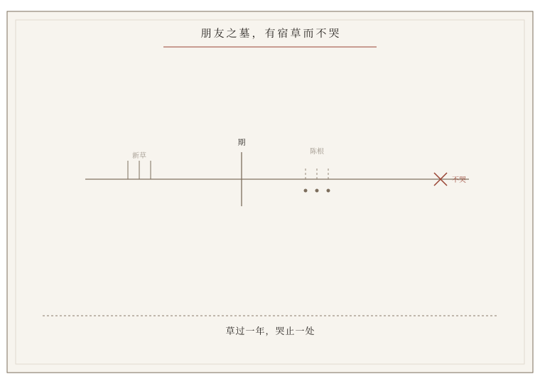

檀弓上 · 三·八 · 第 211 课
曾子曰：朋友之墓，有宿草而不哭焉。注「宿草，谓陈根也」「为师心丧三年，于朋友期可」。
说什么事：坟上草过一年，就不再去哭了。
落在哪一层：礼，兼及礼意。论哀之有节。
为何编在此位：上节极写师弟之恩，此节紧接一句时间的界。两节相并，见恩之厚与哀之限并存不悖。
【经】曾子曰：「朋友之墓，有宿草而不哭焉。」
【注】宿草，謂陳根也。為師心喪三年，於朋友期可。
【疏】曾子，孔子弟子，姓曾名参，字子舆，鲁人也。宿草，陈根也；草经一年陈，根陈也。朋友相为哭一期，草根陈，乃不哭也。所以然者，朋友虽无亲，而有同道之恩。言朋友期而犹哭者，非谓在家立哭位以终期年。张敷云：「谓于一成之内，如闻朋友之丧，或经过朋友之墓及事故须哭，如此则哭焉；若期之外，则不哭也。」
宿草 注「谓陈根也」。疏「草经一年陈，根陈也」。经一年的旧草。
哭 指临墓而哭，非居家设哭位。
期 一年。朋友之哭以期为断，师则三年。
曾子说：朋友的坟上，长了隔年的陈根之草，就不再去哭了。
此经只十一字，而立一条时间的界。古人以草为时标：新草初生，则哭；草已陈根，则止。不立碑，不刻日，只借草木之候。这条界不是无情，恰恰是有情之后的分寸——朋友无亲而有同道之恩，恩不可以无限，故以一年为节。
第一层 以物为时 礼常用自然之物作刻度：宿草、期桑、三年之艾。此节以草之陈根定一年，比刻日更合于野。古人不把时间写在纸上，写在土上。坟上草色一变，举目即知。
第二层 朋友一期，师则三年 注「为师心丧三年，于朋友期可」。朋友与师，同为无服之伦，而哀之长短不同：师以恩爱成己，故比于父；朋友同道而已，故止于期。同是无服，其心之深浅仍有级。
第三层 哭非立位 疏辨「非谓在家立哭位以终期年」。此「哭」是临墓而哭、闻丧而哭，不是在家里设一个位子守满一年。张敷说得更细：期之内，闻其丧、过其墓、遇其事而哭；期之外则不然。礼之节，节的是触发，不是心意。
第四层 一期之后 过此不哭，非忘之也。草陈根在，人之念不必以哭证。此节最妙处在此：礼替人定了一个停止哭的日子，好让人不必终身以泪自证其不忘。
与今日何干 哀伤需要一个可以结束的边界。忌日、周年、扫墓，都是给哀伤一个「到此为止」的许可。此节最可学的是：给了期限，不是要人忘，是许人活。
| 左 | 右 |
|---|---|
| 朋友之墓 | 无亲而有同道之恩 |
| 有宿草 | 草经一年，根已陈 |
| 而不哭焉 | 期之外不复临哭 |
| 为师心丧三年 | 师比于父 |
| 于朋友期可 | 同道之恩，一期为节 |
| 非谓立哭位以终期年 | 节其触发，非节其心 |
画一座旧坟的近景，视点平而低。坟上覆满隔年的枯草，草茎倒伏、根际露出土色（示「宿草陈根」），坟前无供器、无新土、无祭痕，只有一枚倒伏的旧草束。坟侧不远处一条小路，路面已被草掩去大半，暗示久无人来。远处天色平白，无风、无雨，草叶静止。画面中不画人、不写文字。赭色只用在草根处露出的那一小片土。
